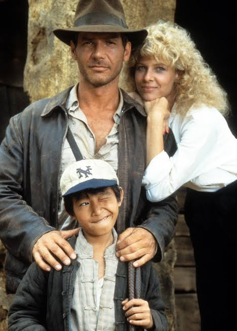
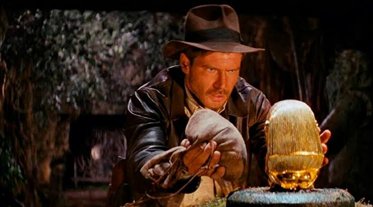

Indiana Jones es un personaje de películas de aventuras interpretado por Harrison Ford.
Es un arqueólogo y aventurero que viaja por diferentes lugares del mundo en busca de objetos históricos. Durante sus aventuras enfrenta peligros, resuelve misterios y descubre antiguas civilizaciones.

| Película | Año | Protagonista |
|---|---|---|
| Los cazadores del arca perdida | 1981 | Harrison Ford |
| El templo de la perdición | 1984 | Harrison Ford |
| La última cruzada | 1989 | Harrison Ford |
| El reino de la calavera de cristal | 2008 | Harrison Ford |
| El dial del destino | 2023 | Harrison Ford |

Si querés conocer más sobre Indiana Jones, podés visitar los siguientes sitios:
Buscar información sobre Indiana JonesIndiana Jones: aventuras, misterios y descubrimientos arqueológicos.